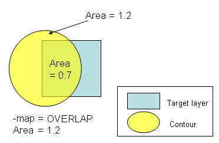
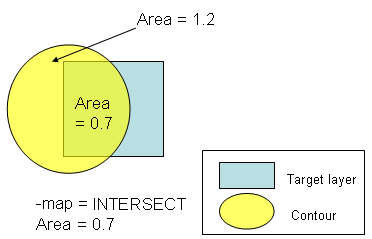

AreaCheck
-layer input_layer_name
-subwindow expr_number
{-minLFDarea area | -maxLFDarea area}
[-mode {absolute | ratio}]
[-map {OVERLAP | INTERSECT}]
[‑security {no | yes}]
[-markerLayer layer_name]
[-referenceLayer “%drawn” | “%retarget” | layer_name]
[-anchorLayer “%reference” | “%drawn” | “%retarget” | layer_name]
[-layerContourCondition contour_condition]
[-maxExtent extent_size]
[-checkName cName]
[-comment comment_text]
[-priority cPriority]
[-classify handle]
[-appendMarker extra_markers_layer]
[-contourHandle contour_handle]
{-database db_name | -layerOut return_layer_name
| -database db_name ‑layerOut return_layer_name}
AreaCheck
-layer input_layer_name
-pdkCheckName check_template
-database db_name
[additional_options]
Performs an area check on PV-band geometries for the specified layer. If -markerLayer is specified, the check is limited to PV-band data that lies inside geometries on -markerLayer. The AreaCheck looks at the area inside a Calibre LFD-generated contour and flag it as a violation if the area does not comply with a constraint. This check is used to identify problems such as minimum area violations on contacts/vias, or posts. It can also be used on metal slots and donut-like shapes.
AreaCheck (AC) checks the area inside PV-bands as shown in Figure 1. If -minLFDarea area is specified, the check measures the area inside the inner edge of the PV-band and flags PV-bands having an area less than or equal to the specified value. If ‑maxLFDarea area is specified, the check measures the area inside the outer edge of the PV-band and flags PV-bands having an area greater than or equal to the specified value.
This function writes all errors discovered by the check to the Calibre nmDRC results database (RDB). It also associates a score to each error and writes it to the Check Database specified by the -database argument. The score is calculated as the area of the model-based violation.
If used with a PDK, this function calls an AreaCheck defined in the PDK and runs it for the specified layer, writing check results to the specified database.
Required keyword and argument defining the name of the layer you are checking. This is the layer for which PV-bands are generated.
Required keyword and argument defining the process variation experiment to which this check applies. You must reference individual process variation experiments by their positions in the -opticalSpanList and-doseSpanList arguments to the PVband command used to generate the PV-band data being checked. Thus, expr_number refers to an index to a list of experiments.
Setting expr_number to a value of “expr_number_shift” causes the check to operate on a certain shift for a double-patterned PV-band with overlay (for example, -subwindow 1_N causes the check to only run on the north shift).
Required keyword and argument defining where to measure the area and what values to flag as errors. You must specify either -minLFDarea area or ‑maxLFDarea area.
-minLFDarea area — Instructs the check to measure the area inside the inner edge of the PV-band and defines the lower bound for the area considered to be passing. Any contours having an area less than or equal to this value are flagged as an error.
-maxLFDarea area — Instructs the check to measure the area inside the outer edge of the PV-band and defines the upper bound for the area considered to be passing. Any contours having an area greater than or equal to this value are flagged as an error.
Optional keyword and argument specifying the mode used to evaluate critical dimension (CD) variability. The option outputs Area and AreaRatio properties. The default mode is “absolute”.
absolute — Calculates the absolute area of the PV-band, and highlights the contacts where their PV-band areas are violating the area constraint.
ratio — Calculates the area ratio of the PV-band with respect to the drawn contacts, and highlights the contacts where their ratios violate the area constraint.
Optional keyword and argument used to specify how the area is calculated. You can choose either of the following value types, OVERLAP and INTERSECT. The default is INTERSECT.
OVERLAP — Area is the total area of the contour that overlaps the feature on the target layer.

INTERSECT — Area is the portion of the contour that intersects the feature on the target layer.

Optional argument defining security privileges. If set to “yes”, the setup file is encrypted in the transcript.
Optional keyword and argument used to constrain the check to those contours that lie within polygons on layer_name. The function ignores areas outside polygons on the layer.
A ‑layerOut layer or a derivation of a -layerOut layer should not be used as the input to ‑markerLayer or a circular layer definition results.
Optional keyword and argument to have the check measurements calculated on a different layer than the input layer to the checks for which the PV-bands have been generated.
You can provide one of the following options as an input to this argument:
“%drawn” — Default. The check measurements are calculated with respect to the drawn layer input to the check with -layer.
“%retarget” — The check measurements are calculated with respect to the retarget layer of the input drawn layer of the check. The check stores the retarget layer name in the PDK.
layer_name — You can define any layer name to have the check measurements done with respect to it. This argument can be used when no PDK is used, and you know the name of the retarget layer.
Optional keyword and argument to have the output error markers from the checks anchored on a different layer than the input drawn layer of the checks, and different from the reference layer input to the check.
You can provide one of the following options as an input to this argument:
“%reference” — Default. The output error markers are anchored to the layer input to -referenceLayer.
“%drawn” — The output error markers of the check are anchored to the drawn layer input to the check with -layer.
“%retarget” — The output error markers of the check are anchored to the retarget layer of the input drawn layer of the check. The check stores the retarget layer name in the PDK.
layer_name — You can define any layer name to have the output error markers anchored to it. This argument can be used when no PDK is used, and you know the name of the retarget layer.
Optional keyword and argument to define a -layer check on any defined contour condition in the PV-band, as opposed to only on the inner or outer PV-band contours.
You can provide one of the following options as an input to this argument:
min — Specifies the command works on the inner PV-band contour.
max — Specifies the command works on the outer PV-band contour.
integer — This integer is the order of the experiment in the subwindow. In the LFD::PVband command, by default subwindows are assumed to be constructed as extensions to previously-created subwindows, so the order of experiments is counted from the first subwindow. If the LFD::PVband -independentWindows option is set, the order of experiments is only counted in the defined subwindow.
process condition list — This must be an ordered list, with 3, 4, 5, 6, 8, or 10 elements defining an explicit process condition. The list must be supplied as follows:
{optical1 dose1 size1 [resist1 etch1] [optical2 dose2 size2 [resist2 etch2]]}
These values must define a process condition (dose and focus settings) that is one of the conditions evaluated by the LFD::PVband or LFD::RegisterContour commands for the layer.
This switch is useful when variations between layers are well-controlled, and you are interested in considering process variations of one layer over the nominal behavior of another.
Optional keyword and argument used to modify the Calibre OPCverify tool’s max_extent value option to the area_compute control inside of a package. The default extent_size is 3.0 microns. This is useful as the large default max_extent value can affect Calibre LFD performance.
Optional keyword and argument specifying the name to use for the check in the RDB. If not specified, the check in the RDB is assigned a system-generated name as defined in Table 1. Use this keyword to avoid name collisions if performing multiple checks of this type.
Optional keyword and argument specifying a priority for this check. If not specified, the check in the RDB is assigned a system-generated priority based on the ‑subwindow value and default ranking of 3, as defined in Table 2. cPriority must be an integer value.
Optional keyword and argument used with -database for defining the comment text to be reported in the RDB if the check encounters a violation of this type. Each comment results in one line of check text. If not specified, the comment for an AC violation is “Polygon Area Violation: Improve / Deprove the original geometry size. Increase / Decrease proximity spacing to near by polygons.”
The comment_text must be a single string, so comments containing spaces must be enclosed in braces. For example:
-comment {This is my comment.} Optional keyword and argument used to define a handle to point to an LFD::ClassifyConfig object.
Optional keyword and argument used to add the polygons in the extra_markers_layer layer to the output of the check. The output retains the properties on the extra_markers_layer layer supported by the check. This option is not allowed for checks that are tied to an LFD::StructureOptimizer.
Optional keyword and argument used to perform Calibre LFD checks on specific contour handles. This option is for use with the contour handle generated using the Customizable PV-Bands flow.
Required keyword and argument defining the RDB to which violations identified by the check are written. You must indicate where the violations are written by specifying ‑database or ‑layerOut or both.
Required keyword and argument defining the name of a derived layer to which the violations identified by the check are written. This layer exists in memory and can be referenced in subsequent Calibre nmDRC operations. You must indicate where the violations are written by specifying -database or -layerOut or both.
A -layerOut layer or a derivation of a ‑layerOut layer should not be used as the input to ‑markerLayer, or a circular layer definition results.
Required keyword and argument specifying the name of the check template defining how the check is performed.
Optional keywords and arguments allowed only when the security settings within the PDK permit you to modify the settings for this command. These can be any of the options for the non-PDK AreaCheck command. Any additional options specified overrides the options defined within the PDK.
Verify that the area of individual contacts are above 0.003 across all the conditions specified by subwindow 1. All violations are then reported to areaCheck.rdb:
LFD::AreaCheck -layer contact -subwindow 1 -minLFDarea 0.003 \
-database areaCheck.rdb